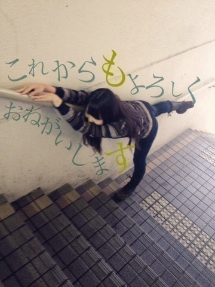
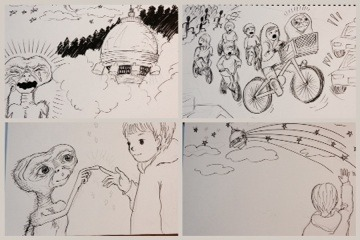

2013/1004Fri雨上がり傘。501回目
日曜日、代々木だー
ずーっとどきどきが止まりません。
どきどきどきどきどきどき
どきどき...
どっどっどっどっ
どどどどどどどどどどど
ずどどどどどだぢづでど
...
混乱
コメントいっぱい
ありがとうございました！
こんなにたくさんの方が
読んでくれてると思ったら
嬉しくて嬉しくてー
...はあああ
嬉しいです。
今日の写真も前回と一緒
いっぱい撮ってもらったの。
まだあるから載せたいけど...
みなさんが忘れた頃に載せようかな
写真の加工はなんてゆーアプリ？
▶︎加工は
LINEcamera、Pixlromatic
文字はPhonto
海外の絵本とか好きなのかな？
▶︎大好き。日本の絵本もすき。
500回目BLOGの
マグカップの中には
何が入ってたの？？(笑)
何が入ってたの？？(笑)
▶︎かわいいラテアート！
これ、ちょっと飲んだ後。
吸い込まれそうなくま！
たまに、読み返す事とか有りますか？
▶︎ありますー
変な文だなーって思って反省したり...
どんな写真載せたか確認したり！
久しぶりに質問回答しました
では明日も頑張る！！ぬぁ！！
あのね、さっきから
家に蚊がいるの
いっぱい刺されてるの。
かゆいの。
蚊よ！去れー！
まりか
2013/1002Wed撮られる。500回目
＼祝／
1日はママの誕生日ー
今朝美味しいチーズを
プレゼントしました。
ママおめでとう
今日のは全部
友達に撮ってもらった写真。
雨で涼しかったです。
薄手のニット一枚です。
生姜料理食べた！
そして父になる
を観た！
髪のびました。
長い重い暑いでも落ち着く
500回目早いですね！
ゆるく更新していきます
今日からタイトル変えてみます。
500回目になったら
変えたいと思ってたんだ！
いつもコメントしてくれるみなさん
たまにコメントしてくれるみなさん
いつも読んでくれるみなさん
たまに読んでくれるみなさん
初めて読んでくれたみなさん

もす=moss=苔
伊藤万理華
2013/1001Tue499回目*marika
昨日の乃木どこ

E.T.色なしバージョン！
絵を描くのすきです。
あまり言ってなかったけど。
あ、ブログではたまに言ってた。
細いペンやシャーペンで
細かい絵を描くのすきです。！
個握に行ったみなさん
楽しかったですかーーー
それとも私がいなくて
寂しかったですかーーーーっ？
そんな私は体育祭でした
疲れたー
けど、楽しかった。
もう、友達とあんな風に
熱くなることはないだろうな。
家からトマトジュースを持ってきて
お昼の時間に飲もうと思ったら
すっごくぬるくなってて
飲むのが大変でした
......
最近のボケが激しすぎる話
仕事終わりに服を買って
電車に乗りました。
いつの間に手から服の入った袋を
落としてしまったみたいで
それに気づいた
目の前に座ってた人が
落としましたよ
と伝えてくれました。
ーここまでは普通ー
私は足元に落ちた袋を見ました。
なんでか
自分のじゃないと思ってしまって
違います私のじゃないです
って断って
自ら網棚に置いて
帰ってしまいました。
最寄り駅の改札出て
買った服がないことに気づきました。
はあああああああああああ
ああああああ
こんな大ボケかましたのはじめてだ。
大丈夫かな。私
みなさんはこんな経験ありませんか！
真夏とかよくありそう！←

最近笑顔が少ないと言われるので
笑ってみーたーよ
きゃは！
うふ！
しばらくは大きい画像にしてみます。
押すと大きくなる画像は
画質少し良いけど期間が過ぎると
見れないらしいので...！
甲乙つけがたいですな！
どちらも同じくらいの票数でした。
ご意見ありがとうございました ！
！
！まりか